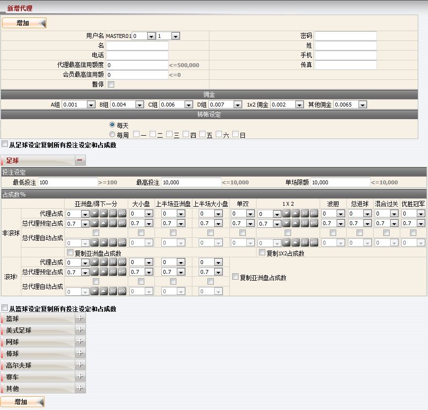
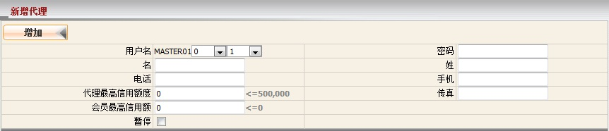
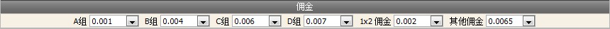
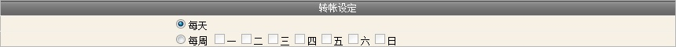
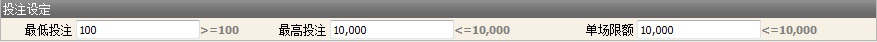
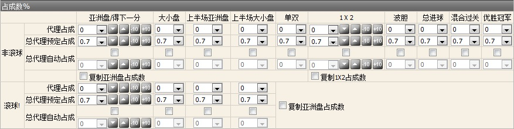
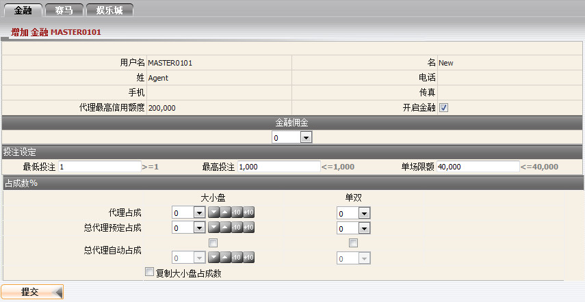
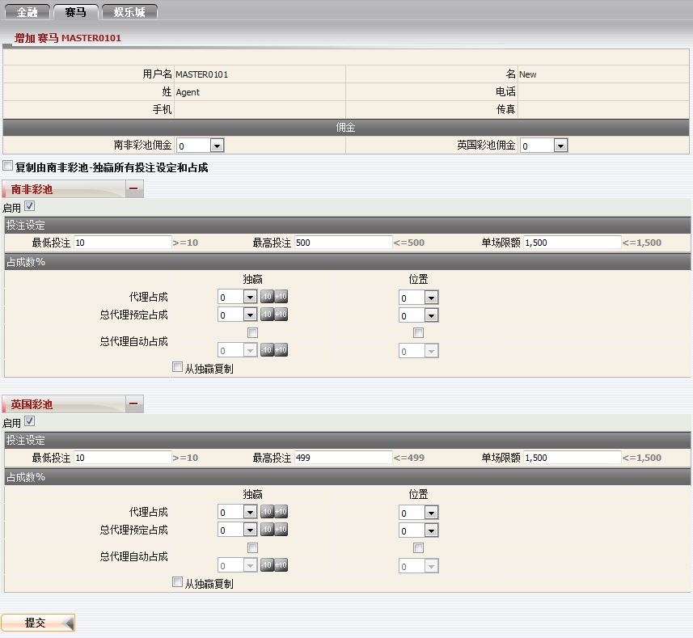
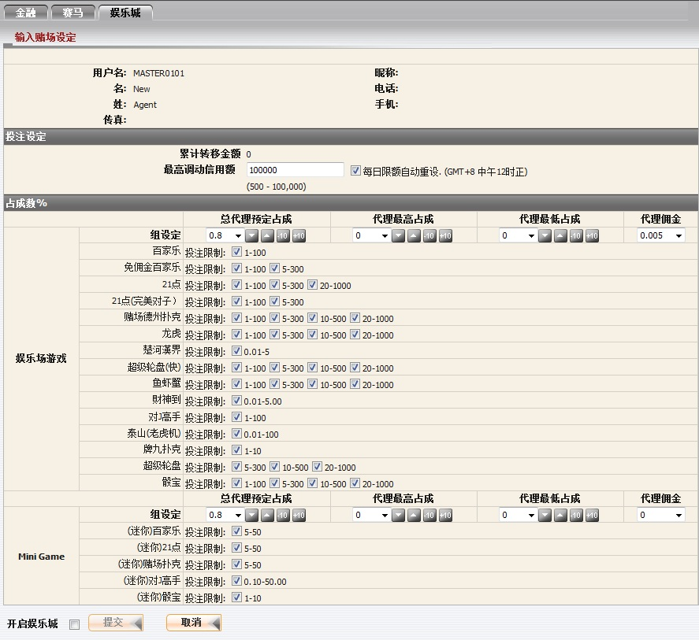

定义:
这个功能让总代理新增一个代理, 然后编辑其佣金, 投注设定及对该代理的占成数。
如何?
为了实现创建一个新的代理, 您必须填写:代理资料登记
这是填写代理的所需的资料。在这个形式中, 以下几点值得关注:
这是为了设定代理佣金收入的百分比, 只需从下拉列表中选取一个值, 并记得代理佣金设定不能大于总代理的。

用词注解:

投注设定
此设定适用于代理将限制最高及最低投注金额。必须注意的是最低投注 < 最高投注 < 单场限额。
用词注解:
备注: 不同条目/队名将被视为另一场赛事。
例如, 以下赛事都将被视为不同的赛事或个别的项目。
a) "西班牙 (中) -vs- 荷兰" [2010 FIFA南非世界杯]。
b) "西班牙 00:00-15:00 -vs- 荷兰 00:00-15:00" [2010 FIFA南非世界杯 - 特定15分钟大小]
c) "西班牙 15:01-30:00 -vs- 荷兰 15:01-30:00" [2010 FIFA南非世界杯 - 特定15分钟大小]
即使联赛名称相同, 但由于不同的队伍名称, 上述条件仍然适用。
占成数设定
这个设定将决定您最初的占成数, 及代理基于个别运动类型及投注类型, 对他/她的会员的投注额所得到的最高占成数 。
代理必须被启动金融, 他/她才能拥有开设或拒绝金融投注的选项给他/她的会员。管理金融的规则设定将遵循体育博彩。

代理必须被启动赛马, 他/她才能拥有开设或拒绝赛马投注的选项给他/她的会员。 管理赛马的规则设定将遵循体育博彩。目前, 系统提供了南非彩池及英国彩池, 可投注类型: 独赢, 位置。

代理必须被启动娱乐城, 他/她才能拥有开设或拒绝娱乐城投注的选项给他/她的会员。 管理娱乐城的规则设定将遵循体育博彩, 此外还有一些其他的娱乐城条款及规则如下:
